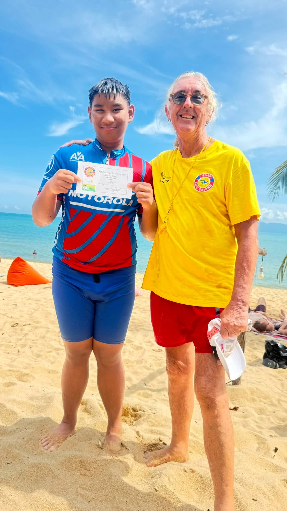
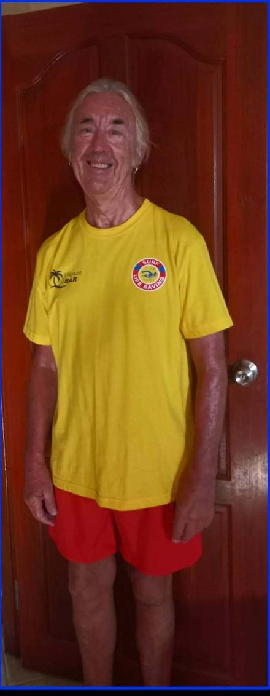

Pete - The Doc & Our Muso

Pete, affectionately known as "The Doc", has been an integral part of the Koh Samui Surf Lifesaving Club from day one.
Every Sunday morning, Pete is there on the beach, getting involved with the kids and helping them develop their swimming and ocean skills. The children already know and trust Pete well through his huge involvement in the Rotary Swim for Life program, where he has helped teach many of the same kids how to swim in the pool before they progressed into the ocean program.
Pete has therefore been an important link between the pool and the ocean - helping children make that transition from learning to swim to becoming confident and capable in the open water.
And then there's Pete the muso! His musical talents have also become part of the character and spirit of the club, adding another dimension to the community that has grown around the Surf Lifesaving Club.
His dedication, experience and connection with the children make Pete a very special part of the club, and we are incredibly grateful to have him there with us every Sunday.
